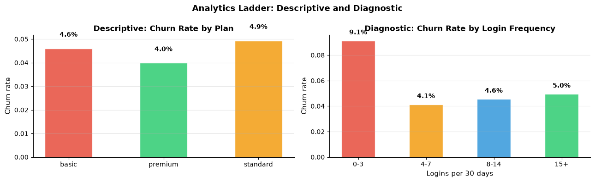
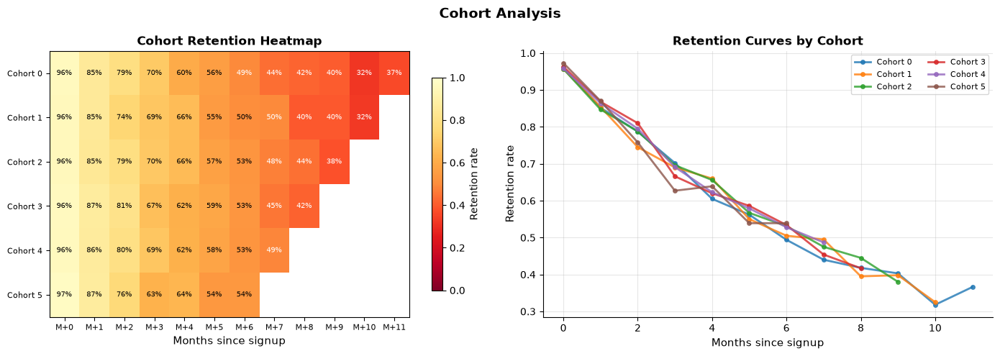
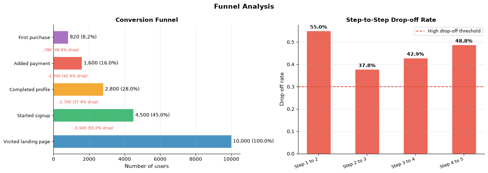
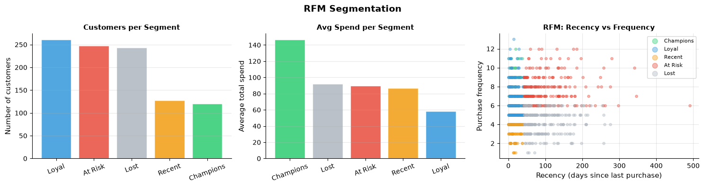
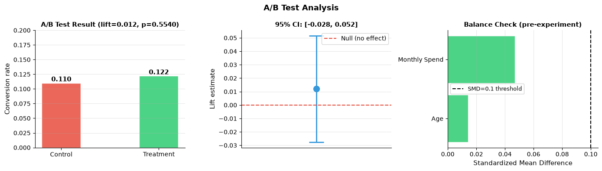

How do you conduct an analytics workflow?#
Topics: Analytics Ladder · Cohort Analysis · Funnel Analysis · RFM Segmentation · A/B Test Analysis · SQL Patterns
1. The Analytics Ladder#
What it is#
Four levels of analytics, each answering a different question
Most DS work lives at descriptive and diagnostic levels
Level |
Question |
Example |
|---|---|---|
Descriptive |
What happened? |
Monthly churn rate was 8% |
Diagnostic |
Why did it happen? |
Churn is highest among users with <5 logins/month |
Predictive |
What will happen? |
23% of current users will churn next month |
Prescriptive |
What should we do? |
Send retention email to users with logins <5 and tenure >6m |
Key intuition#
Always start at descriptive — understand before predicting
Diagnostic requires segmentation and drill-down
Prescriptive requires causal thinking — not just correlation
import pandas as pd
import numpy as np
import matplotlib.pyplot as plt
import warnings
warnings.filterwarnings('ignore')
np.random.seed(42); n = 5000
df = pd.DataFrame({
'user_id' : range(n),
'signup_month' : pd.to_datetime('2023-01-01') + pd.to_timedelta(np.random.randint(0, 365, n), unit='D'),
'age' : np.random.randint(18, 65, n),
'plan' : np.random.choice(['basic','standard','premium'], n, p=[0.5,0.3,0.2]),
'logins_30d' : np.random.poisson(8, n),
'monthly_spend' : np.clip(np.random.exponential(60, n), 5, 500).round(2),
'support_tickets': np.random.poisson(0.8, n),
})
df['churned'] = (
(df['logins_30d'] < 4).astype(int) * 0.4 +
(df['support_tickets'] > 2).astype(int) * 0.3 +
np.random.binomial(1, 0.05, n)
).clip(0, 1).round().astype(int)
# Descriptive: churn by plan
churn_by_plan = df.groupby('plan')['churned'].agg(['mean','count']).reset_index()
churn_by_plan.columns = ['plan','churn_rate','n_users']
print("=== Descriptive: Churn Rate by Plan ===")
print(churn_by_plan.to_string(index=False))
# Diagnostic: churn by login bucket
df['login_bucket'] = pd.cut(df['logins_30d'], bins=[0,3,7,14,50],
labels=['0-3','4-7','8-14','15+'])
churn_by_login = df.groupby('login_bucket', observed=True)['churned'].mean().reset_index()
print(" === Diagnostic: Churn Rate by Login Frequency ===")
print(churn_by_login.to_string(index=False))
fig, axes = plt.subplots(1, 2, figsize=(13, 4))
colors_plan = {'basic':'#E74C3C','standard':'#F39C12','premium':'#2ECC71'}
axes[0].bar(churn_by_plan['plan'], churn_by_plan['churn_rate'],
color=[colors_plan[p] for p in churn_by_plan['plan']], alpha=0.85, edgecolor='white', width=0.5)
axes[0].set_ylabel('Churn rate', fontsize=11)
axes[0].set_title('Descriptive: Churn Rate by Plan', fontsize=12, fontweight='bold')
axes[0].grid(True, alpha=0.3, axis='y')
axes[0].spines['top'].set_visible(False); axes[0].spines['right'].set_visible(False)
for i, row in churn_by_plan.iterrows():
axes[0].text(i, row['churn_rate']+0.005, f"{row['churn_rate']:.1%}", ha='center', fontsize=10, fontweight='bold')
axes[1].bar(churn_by_login['login_bucket'].astype(str), churn_by_login['churned'],
color=['#E74C3C','#F39C12','#3498DB','#2ECC71'], alpha=0.85, edgecolor='white', width=0.5)
axes[1].set_xlabel('Logins per 30 days', fontsize=11)
axes[1].set_ylabel('Churn rate', fontsize=11)
axes[1].set_title('Diagnostic: Churn Rate by Login Frequency', fontsize=12, fontweight='bold')
axes[1].grid(True, alpha=0.3, axis='y')
axes[1].spines['top'].set_visible(False); axes[1].spines['right'].set_visible(False)
for i, row in churn_by_login.iterrows():
axes[1].text(i, row['churned']+0.005, f"{row['churned']:.1%}", ha='center', fontsize=10, fontweight='bold')
plt.suptitle('Analytics Ladder: Descriptive and Diagnostic', fontsize=13, fontweight='bold')
plt.tight_layout()
plt.savefig('analytics_ladder.png', dpi=120, bbox_inches='tight')
plt.show()
=== Descriptive: Churn Rate by Plan ===
plan churn_rate n_users
basic 0.046027 2542
premium 0.039877 978
standard 0.049324 1480
=== Diagnostic: Churn Rate by Login Frequency ===
login_bucket churned
0-3 0.091346
4-7 0.041298
8-14 0.045557
15+ 0.049505

2. Cohort Analysis#
What it is#
Groups users by a shared characteristic at a point in time (usually signup date)
Tracks how each cohort behaves over time
Most commonly used to measure retention: what fraction of each signup cohort is still active N months later?
Key intuition#
Cohort analysis separates ‘is the product getting better?’ from ‘are we acquiring different users?’
A rising aggregate retention rate could be driven by better product OR by acquiring older/more loyal cohorts
Cohort view removes this confound
Gotchas#
More recent cohorts have less data — they appear to retain better because we haven’t seen them churn yet
Define ‘active’ clearly before computing retention — last login? transaction? any event?
import pandas as pd
import numpy as np
import matplotlib.pyplot as plt
import warnings
warnings.filterwarnings('ignore')
np.random.seed(42)
# Simulate user signups and monthly activity
n_users = 2000
n_months = 12
signup_month = np.random.randint(0, 6, n_users)
base_retention= np.random.uniform(0.5, 0.9, n_users)
records = []
for uid in range(n_users):
for m in range(n_months):
if m < signup_month[uid]:
continue
months_since = m - signup_month[uid]
prob = base_retention[uid] ** (months_since * 0.3 + 0.1)
if np.random.binomial(1, prob):
records.append({'user_id': uid, 'signup_month': signup_month[uid], 'month': m})
df_events = pd.DataFrame(records)
# Build retention matrix
cohort_size = df_events.groupby('signup_month')['user_id'].nunique()
retention = df_events.groupby(['signup_month','month'])['user_id'].nunique().reset_index()
retention['months_since_signup'] = retention['month'] - retention['signup_month']
pivot = retention.pivot_table(index='signup_month', columns='months_since_signup',
values='user_id', aggfunc='sum')
cohort_pct = pivot.div(cohort_size, axis=0).round(3)
fig, axes = plt.subplots(1, 2, figsize=(14, 5))
# Heatmap
im = axes[0].imshow(cohort_pct.values, cmap='YlOrRd_r', aspect='auto', vmin=0, vmax=1)
axes[0].set_xticks(range(cohort_pct.shape[1]))
axes[0].set_xticklabels([f'M+{c}' for c in cohort_pct.columns], fontsize=8)
axes[0].set_yticks(range(len(cohort_pct)))
axes[0].set_yticklabels([f'Cohort {i}' for i in cohort_pct.index], fontsize=8)
axes[0].set_xlabel('Months since signup', fontsize=11)
axes[0].set_title('Cohort Retention Heatmap', fontsize=12, fontweight='bold')
plt.colorbar(im, ax=axes[0], shrink=0.8, label='Retention rate')
for i in range(cohort_pct.shape[0]):
for j in range(cohort_pct.shape[1]):
val = cohort_pct.values[i, j]
if not np.isnan(val):
axes[0].text(j, i, f'{val:.0%}', ha='center', va='center', fontsize=7,
color='white' if val < 0.5 else 'black')
# Retention curves by cohort
for cohort in cohort_pct.index:
row = cohort_pct.loc[cohort].dropna()
axes[1].plot(row.index, row.values, marker='o', markersize=4, linewidth=2,
alpha=0.8, label=f'Cohort {cohort}')
axes[1].set_xlabel('Months since signup', fontsize=11)
axes[1].set_ylabel('Retention rate', fontsize=11)
axes[1].set_title('Retention Curves by Cohort', fontsize=12, fontweight='bold')
axes[1].legend(fontsize=8, ncol=2); axes[1].grid(True, alpha=0.3)
axes[1].spines['top'].set_visible(False); axes[1].spines['right'].set_visible(False)
plt.suptitle('Cohort Analysis', fontsize=14, fontweight='bold')
plt.tight_layout()
plt.savefig('cohort_analysis.png', dpi=120, bbox_inches='tight')
plt.show()

3. Funnel Analysis#
What it is#
Tracks users through a sequence of steps toward a goal
Identifies where users drop off and by how much
Conversion rate = users who complete step N / users who started step 1
Key intuition#
The biggest drop-off is usually the highest-leverage optimization target
Always segment funnels — overall conversion hides subgroup differences
Compare funnels over time or across segments
Gotchas#
Funnel order matters — a user who skips step 2 might still complete step 3
Time window matters — a user who completes step 1 today and step 2 next week may be missed
Aggregate funnels can hide Simpson’s paradox — always check key segments
import pandas as pd
import numpy as np
import matplotlib.pyplot as plt
import warnings
warnings.filterwarnings('ignore')
np.random.seed(42)
# Funnel data
steps = ['Visited landing page', 'Started signup', 'Completed profile', 'Added payment', 'First purchase']
users = [10000, 4500, 2800, 1600, 820]
conv_from_prev = [1.0] + [users[i]/users[i-1] for i in range(1, len(users))]
conv_from_top = [u/users[0] for u in users]
fig, axes = plt.subplots(1, 2, figsize=(14, 5))
# Funnel chart
colors = ['#2980B9','#27AE60','#F39C12','#E74C3C','#9B59B6']
bar_width = 0.5
for i, (step, user, color) in enumerate(zip(steps, users, colors)):
axes[0].barh(i, user, bar_width, color=color, alpha=0.85, edgecolor='white')
axes[0].text(user + 100, i, f'{user:,} ({conv_from_top[i]:.1%})', va='center', fontsize=10)
if i > 0:
drop = users[i-1] - user
axes[0].text(user/2, i-0.5, f'-{drop:,} ({1-conv_from_prev[i]:.1%} drop)', va='center',
ha='center', fontsize=8, color='#E74C3C', style='italic')
axes[0].set_yticks(range(len(steps))); axes[0].set_yticklabels(steps, fontsize=9)
axes[0].set_xlabel('Number of users', fontsize=11)
axes[0].set_title('Conversion Funnel', fontsize=12, fontweight='bold')
axes[0].grid(True, alpha=0.3, axis='x')
axes[0].spines['top'].set_visible(False); axes[0].spines['right'].set_visible(False)
# Step-to-step conversion rates
drop_rates = [1 - c for c in conv_from_prev[1:]]
step_labels = [f'Step {i} to {i+1}' for i in range(1, len(steps))]
bar_colors = ['#E74C3C' if d > 0.3 else '#F39C12' if d > 0.15 else '#2ECC71' for d in drop_rates]
bars = axes[1].bar(step_labels, drop_rates, color=bar_colors, alpha=0.85, edgecolor='white', width=0.5)
axes[1].set_ylabel('Drop-off rate', fontsize=11)
axes[1].set_title('Step-to-Step Drop-off Rate', fontsize=12, fontweight='bold')
axes[1].set_xticklabels(step_labels, rotation=20, ha='right', fontsize=9)
axes[1].grid(True, alpha=0.3, axis='y')
axes[1].spines['top'].set_visible(False); axes[1].spines['right'].set_visible(False)
axes[1].axhline(0.3, color='#E74C3C', linewidth=1.5, linestyle='--', label='High drop-off threshold')
axes[1].legend(fontsize=9)
for bar, val in zip(bars, drop_rates):
axes[1].text(bar.get_x()+bar.get_width()/2, bar.get_height()+0.01,
f'{val:.1%}', ha='center', fontsize=10, fontweight='bold')
plt.suptitle('Funnel Analysis', fontsize=14, fontweight='bold')
plt.tight_layout()
plt.savefig('funnel_analysis.png', dpi=120, bbox_inches='tight')
plt.show()

4. RFM Segmentation#
What it is#
Recency, Frequency, Monetary — three dimensions that describe customer behavior
Scores each customer on each dimension, then combines into segments
Classic marketing analytics framework — simple, interpretable, actionable
Dimension |
Definition |
High score means |
|---|---|---|
Recency (R) |
Days since last purchase |
Purchased recently |
Frequency (F) |
Number of purchases |
Purchases often |
Monetary (M) |
Total spend |
High value customer |
import pandas as pd
import numpy as np
import matplotlib.pyplot as plt
import warnings
warnings.filterwarnings('ignore')
np.random.seed(42); n = 1000
now = pd.Timestamp('2024-01-01')
df = pd.DataFrame({
'customer_id' : range(n),
'last_purchase' : now - pd.to_timedelta(np.random.exponential(60, n).astype(int), unit='D'),
'n_purchases' : np.random.poisson(5, n) + 1,
'total_spend' : np.clip(np.random.lognormal(4, 1, n), 10, 5000).round(2),
})
df['recency_days'] = (now - df['last_purchase']).dt.days
# RFM scoring: 1-4 (4=best)
df['R'] = pd.qcut(df['recency_days'], 4, labels=[4,3,2,1]).astype(int)
df['F'] = pd.qcut(df['n_purchases'].rank(method='first'), 4, labels=[1,2,3,4]).astype(int)
df['M'] = pd.qcut(df['total_spend'], 4, labels=[1,2,3,4]).astype(int)
df['RFM_score'] = df['R'].astype(str) + df['F'].astype(str) + df['M'].astype(str)
df['RFM_sum'] = df['R'] + df['F'] + df['M']
def rfm_segment(row):
if row['R'] >= 3 and row['F'] >= 3 and row['M'] >= 3: return 'Champions'
elif row['R'] >= 3 and row['F'] >= 2: return 'Loyal'
elif row['R'] >= 3 and row['F'] <= 2: return 'Recent'
elif row['R'] <= 2 and row['F'] >= 3: return 'At Risk'
else: return 'Lost'
df['segment'] = df.apply(rfm_segment, axis=1)
seg_stats = df.groupby('segment').agg(
count=('customer_id','count'),
avg_spend=('total_spend','mean'),
avg_recency=('recency_days','mean')
).reset_index()
print("RFM Segments: ", seg_stats.round(1).to_string(index=False))
fig, axes = plt.subplots(1, 3, figsize=(15, 4))
colors_seg = {'Champions':'#2ECC71','Loyal':'#3498DB','Recent':'#F39C12','At Risk':'#E74C3C','Lost':'#AEB6BF'}
# Segment size
seg_counts = df['segment'].value_counts()
axes[0].bar(seg_counts.index, seg_counts.values,
color=[colors_seg[s] for s in seg_counts.index], alpha=0.85, edgecolor='white')
axes[0].set_ylabel('Number of customers', fontsize=11)
axes[0].set_title('Customers per Segment', fontsize=11, fontweight='bold')
axes[0].grid(True, alpha=0.3, axis='y'); axes[0].tick_params(axis='x', rotation=20)
axes[0].spines['top'].set_visible(False); axes[0].spines['right'].set_visible(False)
# Avg spend by segment
seg_spend = df.groupby('segment')['total_spend'].mean().sort_values(ascending=False)
axes[1].bar(seg_spend.index, seg_spend.values,
color=[colors_seg[s] for s in seg_spend.index], alpha=0.85, edgecolor='white')
axes[1].set_ylabel('Average total spend', fontsize=11)
axes[1].set_title('Avg Spend per Segment', fontsize=11, fontweight='bold')
axes[1].grid(True, alpha=0.3, axis='y'); axes[1].tick_params(axis='x', rotation=20)
axes[1].spines['top'].set_visible(False); axes[1].spines['right'].set_visible(False)
# Scatter: recency vs frequency, colored by segment
for seg, color in colors_seg.items():
mask = df['segment'] == seg
axes[2].scatter(df[mask]['recency_days'], df[mask]['n_purchases'],
color=color, alpha=0.4, s=15, label=seg)
axes[2].set_xlabel('Recency (days since last purchase)', fontsize=11)
axes[2].set_ylabel('Purchase frequency', fontsize=11)
axes[2].set_title('RFM: Recency vs Frequency', fontsize=11, fontweight='bold')
axes[2].legend(fontsize=8, markerscale=2); axes[2].grid(True, alpha=0.3)
axes[2].spines['top'].set_visible(False); axes[2].spines['right'].set_visible(False)
plt.suptitle('RFM Segmentation', fontsize=14, fontweight='bold')
plt.tight_layout()
plt.savefig('rfm_segmentation.png', dpi=120, bbox_inches='tight')
plt.show()
RFM Segments: segment count avg_spend avg_recency
At Risk 248 89.5 102.2
Champions 120 146.7 17.6
Lost 243 92.1 97.7
Loyal 261 58.1 17.0
Recent 128 86.8 17.2

5. A/B Test Analysis & SQL Patterns#
A/B test analysis workflow#
Check balance — are groups comparable on key covariates?
Check sample size — was it determined before the experiment?
Compute the metric — mean, rate, or revenue per user
Test for significance — t-test, z-test, or Mann-Whitney
Compute effect size and confidence interval — not just p-value
Check guardrail metrics — did anything break?
Common SQL patterns for analytics#
-- Cohort retention
SELECT
DATE_TRUNC('month', signup_date) AS cohort_month,
DATE_TRUNC('month', activity_date) AS activity_month,
COUNT(DISTINCT user_id) AS active_users
FROM user_activity
GROUP BY 1, 2
-- Funnel
SELECT
COUNT(DISTINCT CASE WHEN step='view' THEN user_id END) AS view,
COUNT(DISTINCT CASE WHEN step='cart' THEN user_id END) AS cart,
COUNT(DISTINCT CASE WHEN step='checkout'THEN user_id END) AS checkout
FROM events
-- Window function for running total
SELECT user_id, date,
SUM(revenue) OVER (PARTITION BY user_id ORDER BY date) AS cumulative_revenue
FROM transactions
Interview Q&A#
What is the difference between a t-test and a z-test?
t-test: small samples, unknown population variance — uses t-distribution
z-test: large samples (n>30) or known variance — uses normal distribution
In practice: with web data n is usually large, z-test and t-test give same result
What do you do when the A/B test result is not significant?
Check if you were underpowered — compute the power achieved
Check for heterogeneous effects — maybe it works for a subgroup
Do not extend the experiment — this inflates false positive rate (peeking problem)
Gotchas#
Never look at results mid-experiment and decide to continue — inflates false positives
Per-user metric (not per-event) — users, not clicks, are the unit of analysis
Network effects violate independence assumption — use cluster randomization
import pandas as pd
import numpy as np
import matplotlib.pyplot as plt
from scipy import stats
import warnings
warnings.filterwarnings('ignore')
np.random.seed(42)
n_per_group = 500
ctrl = np.random.binomial(1, 0.10, n_per_group)
trt = np.random.binomial(1, 0.13, n_per_group)
# Balance check — covariates
age_ctrl = np.random.normal(35, 10, n_per_group)
age_trt = np.random.normal(35.5, 10, n_per_group)
spend_ctrl = np.random.exponential(50, n_per_group)
spend_trt = np.random.exponential(51, n_per_group)
t_stat, p_val = stats.ttest_ind(trt, ctrl)
diff = trt.mean() - ctrl.mean()
se = np.sqrt(ctrl.var()/n_per_group + trt.var()/n_per_group)
ci_low = diff - 1.96*se
ci_hi = diff + 1.96*se
print(f"Control conversion : {ctrl.mean():.3f}")
print(f"Treatment conversion: {trt.mean():.3f}")
print(f"Absolute lift : {diff:.3f} ({diff/ctrl.mean():.1%} relative)")
print(f"95% CI : [{ci_low:.3f}, {ci_hi:.3f}]")
print(f"p-value : {p_val:.4f} ({'significant' if p_val<0.05 else 'not significant'})")
fig, axes = plt.subplots(1, 3, figsize=(14, 4))
# Conversion rates
axes[0].bar(['Control', 'Treatment'], [ctrl.mean(), trt.mean()],
color=['#E74C3C','#2ECC71'], alpha=0.85, edgecolor='white', width=0.4)
axes[0].set_ylabel('Conversion rate', fontsize=11)
axes[0].set_title(f'A/B Test Result (lift={diff:.3f}, p={p_val:.4f})', fontsize=11, fontweight='bold')
axes[0].set_ylim(0, 0.20); axes[0].grid(True, alpha=0.3, axis='y')
axes[0].spines['top'].set_visible(False); axes[0].spines['right'].set_visible(False)
for i, (label, val) in enumerate(zip(['Control','Treatment'],[ctrl.mean(),trt.mean()])):
axes[0].text(i, val+0.003, f'{val:.3f}', ha='center', fontsize=11, fontweight='bold')
# Confidence interval
axes[1].errorbar([1], [diff], yerr=[[diff-ci_low],[ci_hi-diff]],
fmt='o', color='#3498DB', capsize=12, capthick=2, markersize=10, linewidth=2)
axes[1].axhline(0, color='#E74C3C', linewidth=1.5, linestyle='--', label='Null (no effect)')
axes[1].set_xlim(0, 2); axes[1].set_xticks([])
axes[1].set_ylabel('Lift estimate', fontsize=11)
axes[1].set_title(f'95% CI: [{ci_low:.3f}, {ci_hi:.3f}]', fontsize=11, fontweight='bold')
axes[1].legend(fontsize=10); axes[1].grid(True, alpha=0.3, axis='y')
axes[1].spines['top'].set_visible(False); axes[1].spines['right'].set_visible(False)
# Balance check
covariates = ['Age', 'Monthly Spend']
smd_values = [
abs(age_ctrl.mean()-age_trt.mean()) / np.sqrt((age_ctrl.var()+age_trt.var())/2),
abs(spend_ctrl.mean()-spend_trt.mean()) / np.sqrt((spend_ctrl.var()+spend_trt.var())/2),
]
bar_colors = ['#2ECC71' if s < 0.1 else '#E74C3C' for s in smd_values]
axes[2].barh(covariates, smd_values, color=bar_colors, alpha=0.85, edgecolor='white')
axes[2].axvline(0.1, color='black', linewidth=1.5, linestyle='--', label='SMD=0.1 threshold')
axes[2].set_xlabel('Standardized Mean Difference', fontsize=11)
axes[2].set_title('Balance Check (pre-experiment)', fontsize=11, fontweight='bold')
axes[2].legend(fontsize=9); axes[2].grid(True, alpha=0.3, axis='x')
axes[2].spines['top'].set_visible(False); axes[2].spines['right'].set_visible(False)
plt.suptitle('A/B Test Analysis', fontsize=13, fontweight='bold')
plt.tight_layout()
plt.savefig('ab_test_analysis.png', dpi=120, bbox_inches='tight')
plt.show()
Control conversion : 0.110
Treatment conversion: 0.122
Absolute lift : 0.012 (10.9% relative)
95% CI : [-0.028, 0.052]
p-value : 0.5540 (not significant)
